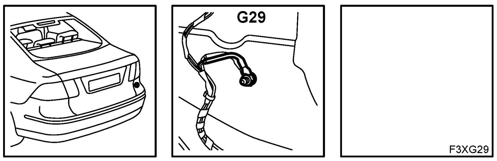
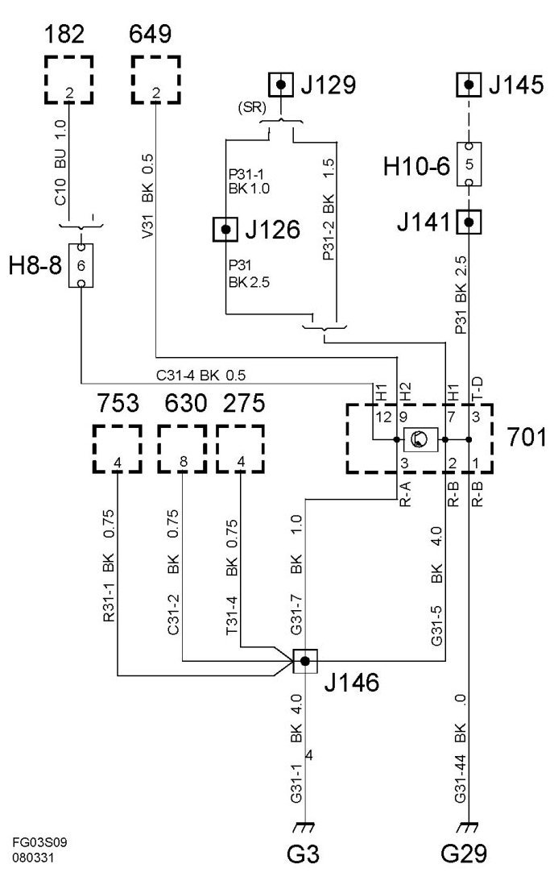
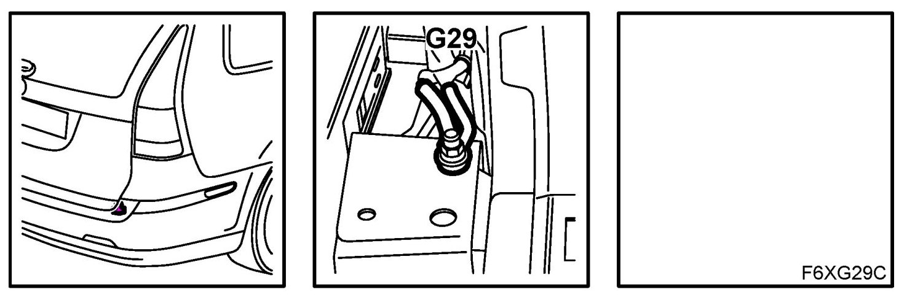
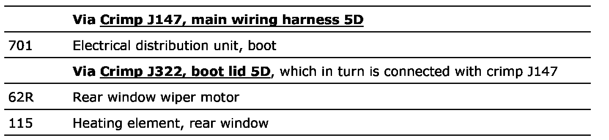
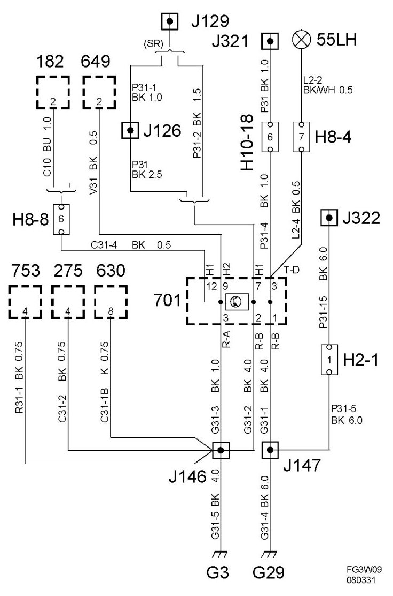

Grounding Point G29
Grounding Point G29
Location
4D: In luggage compartment below the right light cluster.

4D

5D: On right-hand rear luggage compartment floor support.

Connected components 5D


Via the luggage compartment electrical centre 701, the grounding point is connected to:
Grounding point G3, 4D
Grounding point G3, 5D
See these grounding points for other connected components.